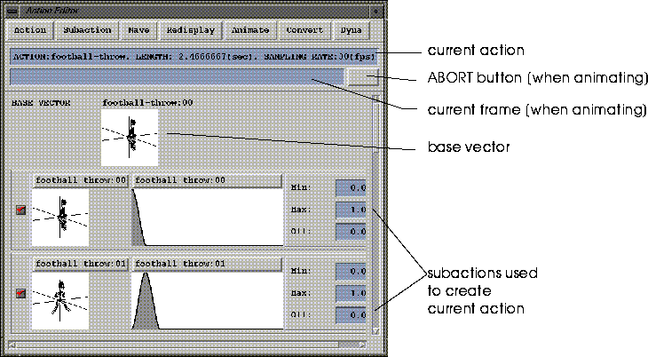
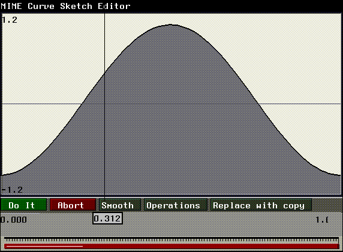
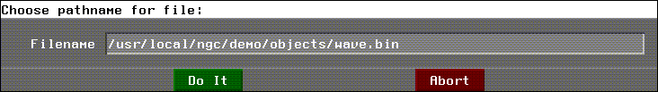
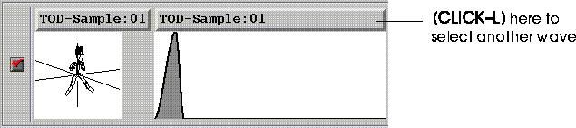
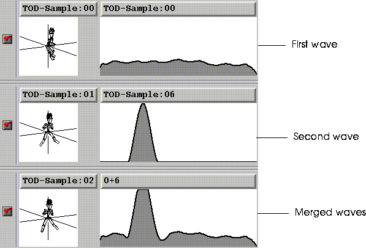

Actions are created, edited, and saved in the following window:
Using the Action Editor

Action
Select Action
Select the action you want to work with (more than one action can be associated with a MIME object).
Create Action
Create a new action, specifying its name, length, and number of frames.
Edit Action Parameters
Modify the name, length, or number of frames for the selected action.
Delete Action
Deletes an action from memory.
SubAction
Create Subaction
Adds a subaction to the current action.
Delete Subaction
Deletes the selected subaction from the its parent action.
Reorder Subaction
Reorder the subactions associated with the selected action.
Wave
Because waves are saved independently from vectors, they can be moved, copied, and edited just like vectors. They can be copied between subactions or even shared by different subactions.

Create Wave
Creates a new wave.
When you (CLICK-L) on this command, you're first prompted to enter a name for the new wave.
Enter the new name for the wave in the dialog box that appears and (CLICK-L) on OK.
Edit Wave
Edits the data for the selected wave.
Delete Wave
Deletes the selected wave.
Read Other Wave
Loads a wave previously saved to disk.


A list of waves associated with the current action is displayed; choose the new wave from that list.
Merge Waves
Combines two waves into a single wave.
The two waves are added, so values above the specified max will be clipped:

Redisplay
Selects the redisplay mode for the subactions in the Action Editor.
Redisplay
Refresh the display of subactions in the Action Editor.
Auto Redisplay On
Refresh the display of subactions in the Action Editor automatically when some modification is made (such as the modification of a wave).
Auto Redisplay Off
Do not refresh the display of subactions, even if some event occurs that would change the appearance of the subactions. Select Redisplay if you want to refresh the display.
Animate
Animate Action
Animate the action in the N-Geometry window. The animation is based on the vectors and waves in the active subactions associated with this action.
Playback
Plays the one-bit recording from the last animation.
Playback Loop
Plays the one-bit recording from the last animation repeatedly.
Convert
Convert Action
Writes the following files for the current action:
Convert Action (FlayPolygon)
Similar to Convert Action, except that the RSD files have the single normal polygon format.
Convert Action (Wave Only)
Writes out only the .wave files for the action.
Convert and Send Action
Writes the following files for the current action, then automatically FTPs the appropriate files to the host specified in the Modes menu of N-Dynamics:
Convert and Send Action (Flay Polygon)
Similar to Convert and Send Action, except that the RSD files have the single normal polygon format.
Dyna
Action Generate
Creates a new action, converts the cues (keyframes) in N-Dynamics into their component vector and wave forms, and associates those vectors and waves with that action. The Action Editor automatically generates waves which interpolate the change in shape between vectors.
The action is given the same name as the script.
Action Regenerate
Updates the current action. This command is identical to Action Generate, except that instead of creating a new action, all vector and wave information is deleted from the current action, then is rebuilt, reflecting any changes you may have made to the N-Dynamics script used to generate this action.
Wave Regenerate
When you change the position of a keyframe in the N-Dynamics script, use this command to recalculate the wave data for the action without changing the vector data.
Vector Regenerate
When you change a value for a cue in the N-Dynamics script, use this command to recalculate the vector data for the action without changing the wave data.
Copyright © 1996, Nichimen Graphics Corporation. All rights reserved.